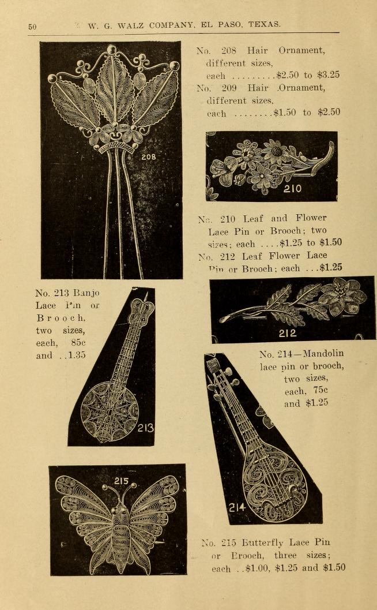

Joyería

Esta página del catálogo de W.G. Walz Company es una selección de broches y adornos para el cabello que muestran el talento de los artesanos mexicanos. La colección incluye artículos como el Adorno para el Cabello No. 208 y el Adorno para el Cabello No. 209 disponibles en diferentes tamaños. Debido a la importancia cultural de la mariposa monarca en México (viajan y anidan en el país), la mariposa es un símbolo común en el arte mexicano. El broche mariposa está disponible en tres tamaños y tiene un precio de $1,00 a $1,50